|
Previous Reads |
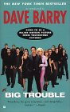
|
Big Trouble
 For a first novel, this is fun and crazy.
It gets a little dark toward the end but Dave Barry's
wonderful, humorous writing style kept me smiling.
For a first novel, this is fun and crazy.
It gets a little dark toward the end but Dave Barry's
wonderful, humorous writing style kept me smiling.
(December 2002)
|
|
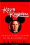
|
Keys to the Kingdom: The Rise of Michael Eisner and te Fall of Everybody Else
I've been to Disneyland far too many times and, when there, I
have usually find a Disney related book to read.
This last time, in Anaheim's Downtown Disney,
I found this one.
This is a look into a facinating world
-- how big time show business happens.
For Walt, the company was "SHOW business".
For Eisner, it's "show BUSINESS".
It's amazing that we get any entertainment or art out of the
system at all.
And then there is the little problem of
major shareholders and us small time owners and who wields
the power and who benefits.
This book is more about the Hollywood entertainment business
and "imperial executive" American business in the '90s.
The author doesn't try to moralize or judge the actions
of the many actors in this story -- she just tells what
happened and you get to draw your own conclusions.
A great read.
(November 2002)
|
|
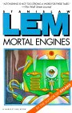
|
Mortal Machines
How does he think all these things up!! What an imagination.
This is a collection of short stories about the robots
whe are populating te universe. After getting away from man,
of course. But there is an undercurrent of this menace that is
searching for them. Searching for revenge.
Fantastic collection.
(October 2002)
|
|
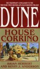
|
House Corrino (Dune: House Trilogy, Book 3)
 I'll give it a three, but it's not as good as the others.
It could have easily have been a two.
The story is plodding and, like the origional Dune series,
the action stopped and it wasn't the principal's actions
that drove the story but endless rationalization within
a fairly static world. I hope the next picks up the
action.
I'll give it a three, but it's not as good as the others.
It could have easily have been a two.
The story is plodding and, like the origional Dune series,
the action stopped and it wasn't the principal's actions
that drove the story but endless rationalization within
a fairly static world. I hope the next picks up the
action.
(October 2002)
|
|
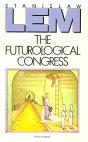
|
The Futurological Congress (From the Memoirs of Ijon Tichy)
(October 2002)
|
|
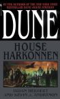
|
House Harkonnen (Dune: House Trilogy, Book 2)
|
|
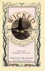
|
Wicked: The Life and Times of the Wicked Witch of the West
I had to buy this book -- the concept was so wonderful.
The life of the Wizard of Oz's wicked witch of the west!
And the first half of the book is fun.
Really different. Strange.
A wonderful creation built from the origional stories without
changing much of the story that we know.
The problem with the book is the ending.
I don't know whether the author just got tired of the story
and slapped an ending on or whether he was forced to wrap it up.
In either case, the ending was rushed and unsatisfactory
and a real let down after the quality and inventiveness of
most of the rest of the book.
(August 2002)
|
|
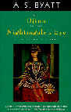
|
The Djinn in the Nightingale's Eye: Five Fairy Stories
(June 2002)
|
|
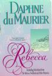
|
Rebecca

(June 2002)
|
|
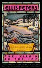
|
The Virgin in the Ice
 I've enjoyed several of the Brother Cadfield murder
mysteries (set in a monastery
in medieval England) but this story was more about the other characters,
war between the Norman barons and very little to do with the quiet
character of Brother Cadfield. The mystery, as little as it was, was
disappointing. I'd recommend the other books before this one.
I've enjoyed several of the Brother Cadfield murder
mysteries (set in a monastery
in medieval England) but this story was more about the other characters,
war between the Norman barons and very little to do with the quiet
character of Brother Cadfield. The mystery, as little as it was, was
disappointing. I'd recommend the other books before this one.
(May 2002)
|

|
Discovering the Power of Self-Hypnosis : The Simple, Natural Mind-Body Approach to Change and Healing
A quick read on the subject of "auto-suggestion". Gives a
good technique and enough examples to be useful. Practical, not
preachy and not academic.
(June 2002)
|
|
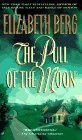
|
The Pull of the Moon
If it's that time of life.
1
Otherwise. This is a tale of a woman transitioning through the "time
of loss". That's about 50 for most woman -- the time when
babies and motherhood are behind one and when one must come to terms with
being just yourself. If you are someone going through this
transition (it also happens to men, by the way), this book illuminates
some of the topics and resolutions. You would find it comforting (in
the support group sense). But, if you are a 30-something or, worse, a
20-something you will find this book whiney and you should give this a
miss.
(May 2002)
|
|
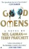
|
Good Omens
Armageddon
as told in Hitchhiker's Guide to the Galaxy style. The anti-Christ
is delivered to the earth but lost by the minions of heaven and hell.
Great hilarity ensues. The humor and situations are great and this
is a fun read.
(May 2002)
|
|
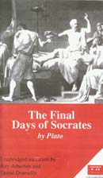
|
The Final Days of Socrates
by
Plato Ray Atherton
(narrator)
Donal Donnelly
(narrator)
An amazingly boring and pedantic work. I even took philosophy in
college (a long time ago) but I don't remember how dumb and "debate
school" this work was. Socrates (as recorded by Plato) would
argue someone with a black and white position and prove that they couldn't
be correct because some gray exists. Well, the court didn't agree either.
(April 2002)
|
|
|
The Nature of Alexander
Excellent history. The campaigns of Alexander the Great told to give
some interpretation of the personality and situation of the man.
Although the book focused a lot on the battles and advances of Alexander's
army and little on the style and everyday activities of life campaigning,
any high school student should read this to get a feel for the actual
history rather than just the dates.
(April 2002)
|
|
|
Lucy's Legacy : Sex and Intelligence in Human Evolution
I am not a practitioner of anthropology or a disciple of any of it's sects
so this book was a wonderful introduction to the current thinking in the
field. While the author has her particular opinions, she presented her
more feminist leaning thoughts with the other arguments in such a way that I
felt I could separate her biases and make my own conclusion. This is a
book that should be read by any under-grad getting into the field of
anthropology.
(April 2002)
|
|
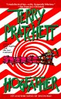
|
Hogfather : A Novel of Discworld
My daughter recommended the Discworld series and this book in particular.
Funny at times but not the best. Inventive and interesting but there
are long periods of not much happening.
(March 2002)
|
|
|
Frankenstein
Soooooo much different than the movie. I had never read this book
and I was expecting something quite different
(see Mutiny on the Bounty
for a similar experience).
The actual creation of the monster takes a
paragraph. The real story is the cultural, societal and moral issues
around a "person" who is not really a person. When we are able
to build AI's .... well, that's a modern telling of Shelley's story.
(January 2002)
|